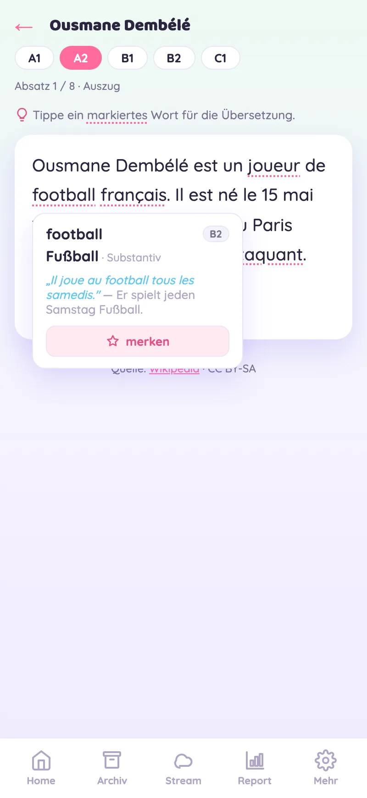
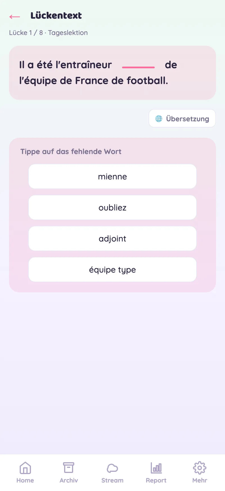
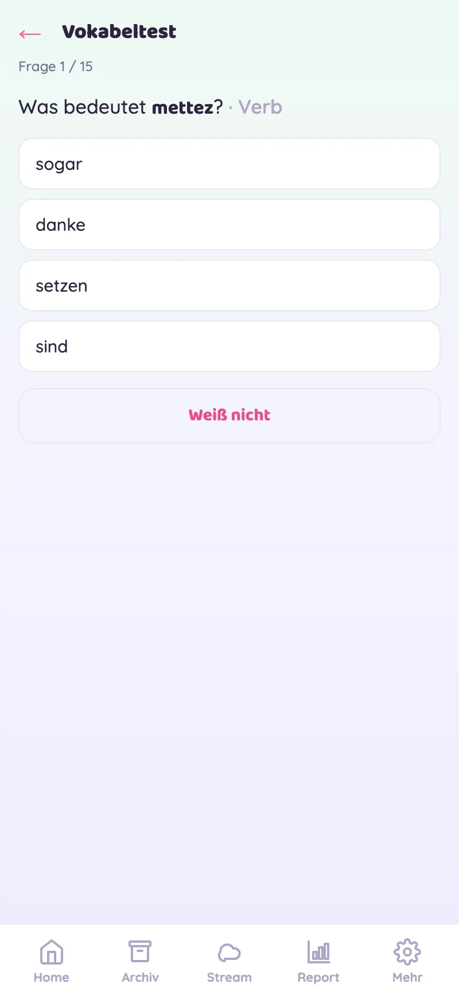
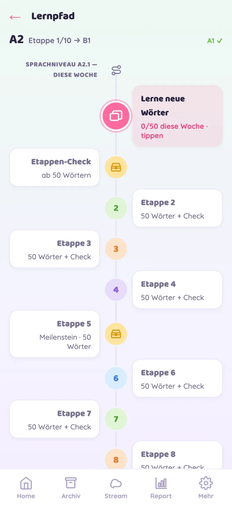
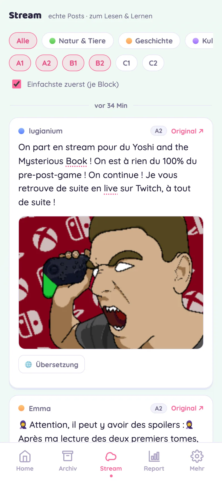

Ein kurzer Blick in Learny.
Sechs Modi, ein Ziel: dich durch echte Texte in eine neue Sprache lesen lassen. Hier siehst du sie in Aktion.
Tagesquest & Fortschritt
Beim Öffnen siehst du deine kleine Tagesquest, deinen Streak und wie nah du der nächsten Etappe bist — ein freundlicher Anstoß, jeden Tag kurz dranzubleiben.
- 2 Mini-Aufgaben pro Tag
- Streak & XP halten dich spielerisch dran

Echte Artikel, auf deinem Sprachniveau
Jeden Tag die meistgelesenen Wikipedia-Artikel — neu geschrieben für dein Sprachniveau (A1–C1). Tippe ein markiertes Wort an und du bekommst Übersetzung, Wortart und einen Beispielsatz. Ein Tipp, und das Wort liegt in deinem Deck.
- Tippen zum Übersetzen — direkt im Text
- Sprachniveau jederzeit umschaltbar (A1–C1)

Lückentexte
Setze fehlende Wörter aus dem Tagesstoff ein. Vier Optionen, sofortiges Feedback und auf Wunsch die Übersetzung — so verankert sich neuer Wortschatz im echten Kontext statt auf Karteikarten.

Dein Vokabel-Deck
Gemerkte Wörter kommen als Quiz zurück — im richtigen Moment wiederholt (Spaced Repetition), damit sie wirklich sitzen bleiben. Mit Beispielsätzen aus echten Sätzen.

Etappe für Etappe — A1 bis C1
5 Level, je 10 Etappen. Lesen, Lernen, Testen — am Ende jeder Etappe wartet der Aufstiegstest. Dein Fortschritt ist immer als klarer Pfad sichtbar, kein Punktechaos.

Social Stream Neu
Echte Social-Media-Posts in deiner Lernsprache — gefiltert nach Thema und Sprachniveau, einfachste zuerst. Tippen zum Übersetzen. So klingt die Sprache, wie sie heute wirklich gesprochen wird.
- Filter nach Rubrik & Sprachniveau (A1–C2)
- Englisch, Französisch, Niederländisch, Spanisch, Italienisch

Klingt gut?
Kein Account, kein Tracking — alles bleibt auf deinem Gerät.
Learny öffnen